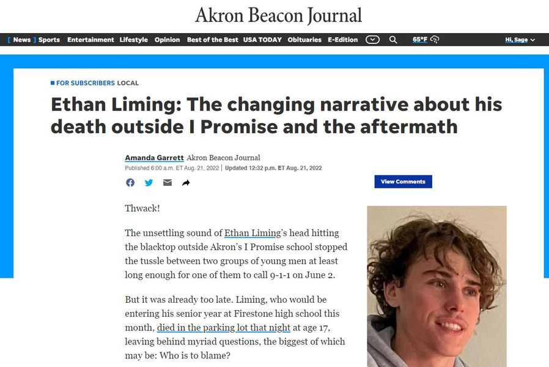

Timeline photos
There is so much going on in this @[89620171203:274:Akron Beacon Journal] article. The thoughts and feelings it stirs up in me are an overwhelming stew of mess and complication.
Let me just vomit some thoughts on you:
FIRST: you can't read it unless you pay for it. If you can afford this paper BUY IT! But what about everyone in Akron that can't afford the subscription? Undoubtedly, they are going to be a very high percentage of Black people that really should have access to this story. EVERYONE ON FOODSTAMPS WHO LIVES IN AKRON SHOULD GET A FREE ONLINE SUBSCRIPTION.
SECOND: I heard a rumor that there are more layoffs coming to the Beacon. If we don't support this paper our city will go dark. It's going to make the powerful more powerful. And the people will suffer more than they already do. BUY THE PAPER IF YOU CAN.
THIRD: based on what I read in this article and another article about the Stand Your Ground law that exists in Ohio, I believe Deshawn Stafford Jr., 20; Tyler Stafford, 19; and Donovon Jones, 21 should be set free. Ethan's parents (whose father is a minister) want their pound of flesh, however. They want to see "justice."
These 3 men were cornered in a 10 foot high fenced-in basketball court. They were being shot with dozens of frozen gel pellets. One man had already been shot before with a real gun. They felt they were under attack.
The basketball players thought at first it was a real drive-by shooting and tried to run, but had nowhere to go because they were fenced in.
As some of Liming’s friends ran, Liming picked up a pellet gun and fired it again at the basketball group, striking the elder Stafford in the face.
FOURTH: Liming and his friends were all athletes. The basketball group were not. The man who is accused of throwing the bunch that knocked Liming to the ground — is only 5-foot-5-inches tall and weighs 120 pounds. ETHAN DIED BECAUSE HIS HEAD HIT THE PAVEMENT. It was not because of some "brutal" beating that the police chief made it out to be.
FIFTH: The police chief did his first ever press conference to make the case that "Ethan Liming did not deserve to die that night at that point based on what we know now."
Akron police told reporters Liming died after being "brutally assaulted" after a fight on the basketball court.
There was no mention that day that Liming and his friends first shot gel pellets at the basketball players.
SIXTH, Ethan's friends ran away after calling 911. They left their friend dead on the pavement. The only reason you do something like that is because you know you are in serious trouble. These high school boys were driving around Akron in Liming’s Kia with one or two gel pellet guns, lots of gel pellet ammunition and two bags of marijuana and a digital scale in the glove box.
SEVEN: In a study of self defense cases that happened after that, the Urban Institute found that cases with a white perpetrator and a Black victim were 281% more likely to be ruled justified than cases with a white perpetrator and white victim.
*******************
It's just all so much.
Here are my thoughts and feelings as raw and unfiltered as I can give them to you:
1. I wish those boys with the pellet guns had gotten the shit beaten out of them worse than they actually did. The entitlement of these kids is beyond imagination.
2. I SO deeply wish for everyone's sake that Ethan hadn't died. Street fights are so much more terrifying than most people think. And it's exactly because of what happened here. Hitting your head is deadly.
3. If you can't see the racist bias our police chief has in this case you are both blind and dumb. He did not need to make ANY kind of biased statement whatsoever about this case. The press release you do is simple: "We are deeply sorry that this tragic situation has happened in our city. We will work tirelessly to bring justice to the situation." Then you exist stage left and get back to work.
4. The white supremacist group National Justice Party (NJP) that came here to demand the Black basketball players face hate crime charges for killing a white person are just creating a false flag operation to rile up white supremacists across the nation.
I have several white supremacist friends. I can appreciate their desire for heritage and tradition. But this kind of race baiting is so hurtful to their cause. Every white supremacist I talk to tells me the same thing: I have no problem with other races. I just want to be with White people. (I tell them to move to Wadsworth or Hudson. We have plenty of places like that right here in Northeast Ohio.)
5. All I see is everyone's pain and suffering. I sometimes feel like that scene in one of those Superman movies where Superman flies to space and just hears all the cries of humanity. I see pain and suffering constantly.
Hate and anger is just pain and suffering leaving the mind. They are all so hurt and the only thing they can think of is to make other people hurt just a little more like they hurt. Ethan's parents lost their son. White supremacists are losing their country. Progressives are trying to bring justice to people who have never seen justice in the first place. Chief Mylett has a very stressful job... Akron is a raw, rust belt inner city. He's from the west coast and likely is shell shocked with what he got himself into here.
6. I think this all could be good. Like REALLY good.
It feels like we are vomiting up all the wrongs of the world right now. And many of us are starting to be able to empathize with more and more people. We need MORE of these situations to come to light that are representative of wrongs that have always existed in America.
My wife and I were just talking about how a church is handling a pedophile entering their community. They want to support the man and they want to support the women who are afraid of him. What a beautiful tragedy that situation is. I believe they will figure it out.
7. This is my message to you: If you are in a place where you can hold peace and love and empathy for others who maybe don't even deserve it: DO SO. But if you only have anger and hate because of where you are in your life please know that's ok too. Just try not to physically hurt yourself and others along the way. And if you are a warrior for justice: go get 'em tiger. We need more people like you in the world.
I love you. Today I see hope in the nightmare.